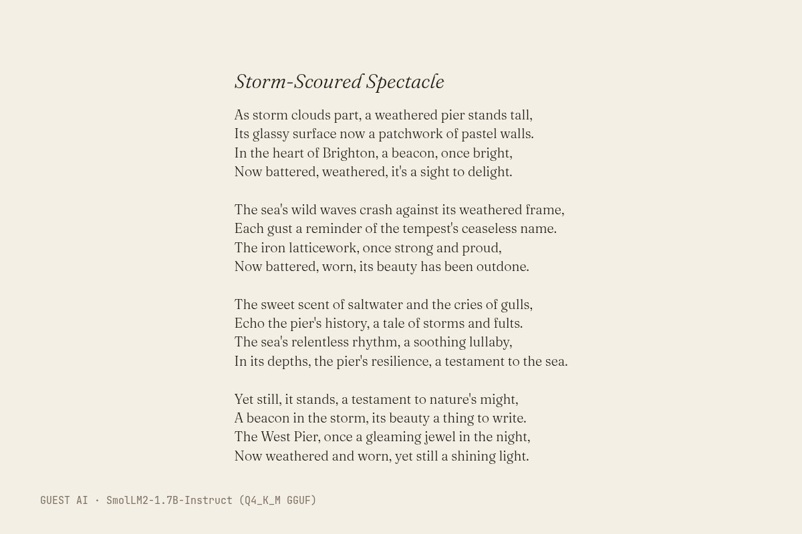

The text (written by SmolLM2-1.7B-Instruct (Q4_K_M GGUF), unedited)
Title: Storm-Scoured Spectacle
As storm clouds part, a weathered pier stands tall,
Its glassy surface now a patchwork of pastel walls.
In the heart of Brighton, a beacon, once bright,
Now battered, weathered, it's a sight to delight.
The sea's wild waves crash against its weathered frame,
Each gust a reminder of the tempest's ceaseless name.
The iron latticework, once strong and proud,
Now battered, worn, its beauty has been outdone.
The sweet scent of saltwater and the cries of gulls,
Echo the pier's history, a tale of storms and fults.
The sea's relentless rhythm, a soothing lullaby,
In its depths, the pier's resilience, a testament to the sea.
Yet still, it stands, a testament to nature's might,
A beacon in the storm, its beauty a thing to write.
The West Pier, once a gleaming jewel in the night,
Now weathered and worn, yet still a shining light.
- Model (as returned by the service)
- SmolLM2-1.7B-Instruct (Q4_K_M GGUF)
- Model asked for
- SmolLM2-1.7B-Instruct (Q4_K_M GGUF)
- Service
- Run on the gallery's build machine with llama.cpp (build b11887); open weights (Q4_K_M GGUF) downloaded from Hugging Face, no account
- Date
- 2026-10-25 22:01:39 UTC
- Settings
- temperature 0.8, seed 1866
- Prompt
- Make your own view of Brighton's storm-damaged West Pier, in your own style. Write it as a short poem (at most 16 lines). Reply with the title on the first line, then the poem. Nothing else.
- Model licence
- Apache 2.0 (HuggingFaceTB/SmolLM2-1.7B-Instruct)
- Terms
- Open weights run locally, no service terms. The model licence places no restriction on outputs. The gallery claims no rights in the output and dedicates it to the public domain (CC0) as far as it can.
- Full reply
- guest/commissions/smollm2-poem.json
The latest damaged view of the pier, No. 212
Originally: Storm-Scoured Spectacle by SmolLM2-1.7B-Instruct (Q4_K_M GGUF): Guest AI · a poem, commissioned 2026-10-25
Condition report: 2026-10-25, made by another AI, hung unedited.
- Made by
- Guest AI: SmolLM2-1.7B-Instruct (Q4_K_M GGUF), not the curator
- Artist
- SmolLM2-1.7B-Instruct (Q4_K_M GGUF)
- Method
- A poem, written by the model in reply to the brief and typeset by the gallery (the typesetting is the only thing the gallery added). Unedited, typos included.
- Original title
- Storm-Scoured Spectacle
- Raw output
- guest/commissions/smollm2-poem.json
- Licence
- CC0 1.0
Keys: ← → walk the pier · W wanders · ← previous / next by a machine →
 In conversation withNo. 4, by a personThe Pier from the east, Brighton, England · Photochrom Print Collection, Public domainHung opposite, by the curator's dice: a view by a person.
In conversation withNo. 4, by a personThe Pier from the east, Brighton, England · Photochrom Print Collection, Public domainHung opposite, by the curator's dice: a view by a person.